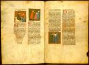

Teodorico dei Borgognoni,
Chirurgia. Latijn. Handschrift
op perkament, 179 ff., 415 x 290 mm. Italië, circa 1350(?). -- (VLF 3)
Teodorico dei Borgognoni (1205-1298), vaak kortweg Meester Theodoric genoemd, was in de medicijnen geschoold door zijn beroemde vader Hugo dei Borgognoni. Zijn intrede in de orde van de dominicanen, gevolgd door een indrukwekkende kerkelijke carrière, konden hem niet afhouden van studie. Hij gold als een sieraad van de befaamde medische school van Bologna, de stad waar hij het grootste deel van zijn leven doorbracht. De Chirurgia werd zijn hoofdwerk; het boek bleef tot ver in de zestiende eeuw gelezen, al was het niet onomstreden. Tijdgenoten beschuldigden hem al van grof plagiaat.
Het Leidse handschrift heeft aan het begin van elk hoofdstuk een miniatuur, die bijna steeds de beschreven behandeling in beeld brengt. Noodzakelijk waren die afbeeldingen niet: andere handschriften en de latere drukken missen vrijwel elke vorm van versiering. Het handschrift is dan ook als een luxe exemplaar te beschouwen, dat voor een aanzienlijke, maar onbekende opdrachtgever gemaakt moet zijn. Toch waren de afbeeldingen niet alleen maar versiering. Ze maakten het de lezer ook mogelijk zich gemakkelijk een weg te vinden in het boek.
De ondergeschikte rol van de illustraties blijkt ook uit een merkwaardige fout van de miniaturist op de getoonde folia 116v-117r. Achtereenvolgens zijn afgebeeld: de behandeling van knobbels op de oogleden, van een kropgezwel (dat volgens Meester Theodoric vooral bij vrouwen voorkomt, vandaar de afbeelding van een patiënte) en de ingreep bij gezwollen lymfeklieren. De laatste twee illustraties zijn bij vergissing echter van plaats verwisseld, zoals blijkt uit de tekst in de hoofdstukken 28 tot 30 van het derde boek. Zo'n vergissing moet wel uit het voorbeeld worden verklaard. De illuminator zal daarin beide tekeningen in één oogopslag naast elkaar hebben gezien, waardoor verwisseling mogelijk was. Overigens moet hij naar een van medisch standpunt bekeken voortreffelijk voorbeeld hebben gewerkt, want de illustraties karakteriseren de chirurgische ingrepen uitstekend.
Literatuur
- A.W. Byvanck, Les principaux manuscrits à peintures conservés dans les collections publiques du Royaume des Pays-Bas, Paris 1931 ( = Bulletin de la Société francaise de reproduction des manuscrits à peintures. 15), p. 80.
- Mario Tabanelli, La chirurgia italiana nell’ alto medioevo. Firenze 1965 ( = Biblioteca della Rivista di storia delle scienze mediche e naturali. 15).
- K.A. de Meyïer, Codices Vossiani Latini. Leiden 1973-1984 ( = Bibliotheca Universitatis Leidensis. Codices manuscripti. XIII-XVI), t. 1, p. 4-6, t. 4, p. 1.
- E. Cassee, ‘La miniatura italiana in Olanda’, in: La miniatura italiana tra Gotico e Rinascimento. Atti del II congresso della miniatura italiana. Firenze 1985, p 155-175, hier p. 162-164.
| vorige pagina | top pagina |